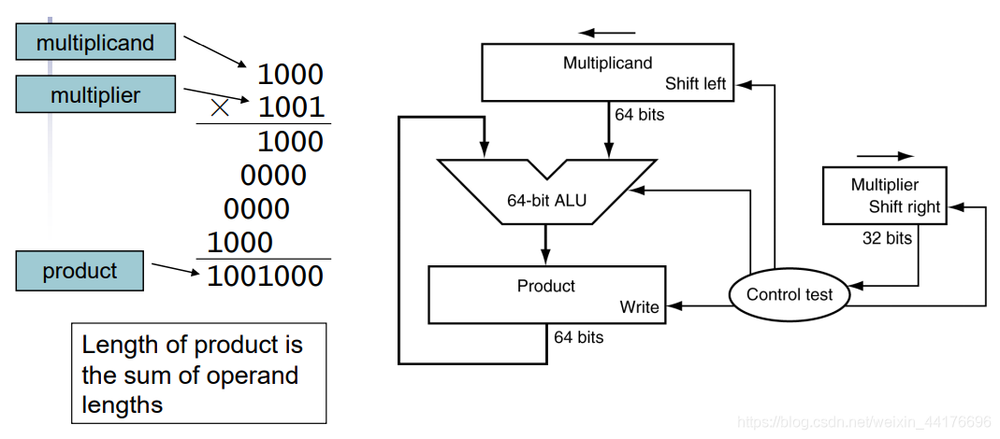
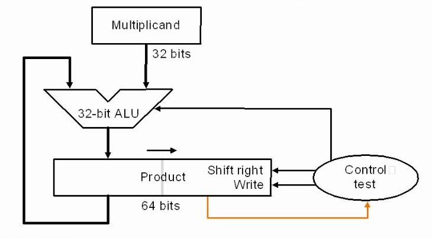
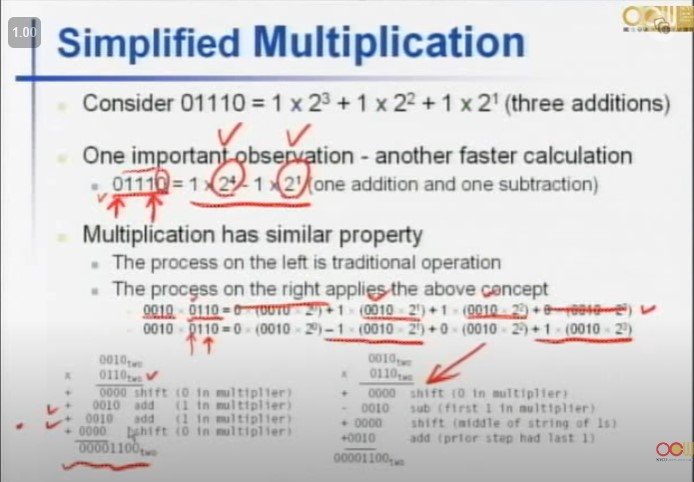

# 第一個乘法器 (Version 1)
Multiplicand 是 64bit, ALU 也是 64 個 bit, product 也是 64bit。因為 32 * 32 所以是 = 64bit, 然後 ALU 也會是 64bit。
ALU 結果會存在 Product 的暫存器裡面的。
而一開始的被乘數會存在 Multiplicand 裡面，而乘數的話會存在 multiplier 裡面。而為什麼他要 Shift right, 因為乘法是從低位數往高位數乘法，因此我們每一次只看他的 LSB, 結束之後就往右移，這樣就能完成乘法了。
如果 multiplier 是 1 的話，就加上 Multiplicand 的數字，如果是 0 就全部都是 0, 並且相加。而 control test 是決定要不要做乘法，並且每一次都會 Shift right 一次。
Product 的 write 用意是說，不管 ALU 做了甚麼結果，如果 Multiplier 的 LSB 是 1, 就把 ALU 的結果存到 Product 裡面，如果為 0, 就不要寫入結果。

# 第二個乘法器 (Version 2)
這一個想法就是不要使用哪麼多的硬體電路。Multiplicand 和 ALU 變成 32bit。然後 Multiplicand 不見了，因此他被存在 Product 裡面了。
為什麼 Product 可以是 64bit, 因為在乘法完成裡面，最後一個 bit 不會變，因此我們可以把那一個 bit 從在 Product 的右半部。
一開始 Product 左半部存的都是 0, 右半部存的是 Multiplier。到最後乘數就會全部被清光。

# Faster 要補
# Booth Algorithm
而 Faster Multiplier, 是對加法作加速的動作，而這個不一樣。
他是用 2 的密次，因此有幾個 1 就就做幾次加法。但其實, 這樣就是只要做一次加法跟一次減法，這樣就少掉一次步驟。
因此可以這樣看：遇到第一個 0 的時候做加法，遇到最後一個 1 的時候做減法。在 init 的時候 LSB 前面還會有一個 bit 用於做判斷要做加法還是減法，但我們會設定為 0, 這樣就不用做任何事情。

從上面的結論可以看的出來。
當前 bit 和後一個 bit => 00, 11 的結果都不管。
01：做加法。
10：做減法。